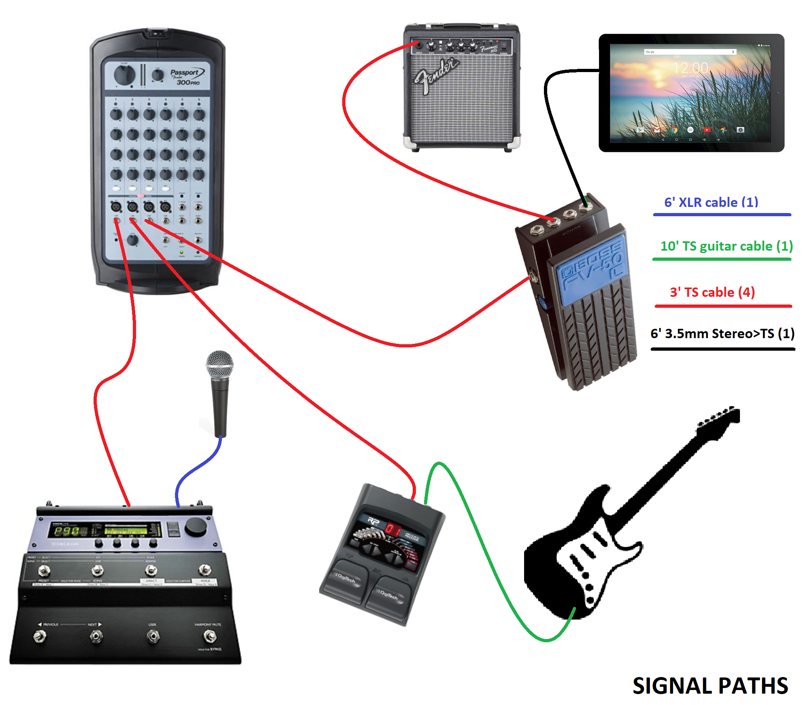

1) Place major 120v devices as shown below...
2) Turn All Volumes to
3) TURN Power strip
4) Plug in power chords & to four (4) 120v Items
5) Setup Microphone, Mic Stand, Tablet & Battery
6)
7) Place Guitar and Guitar Stand
8) Connect all Signal Cables as shown below 
9)Set all tones/effects to default setting below
|
(Vol) |
(tone) |
|||||
| - | Fred Voice |
Fred Guitar |
Back Track |
Tascam DR05 |
open | open |
| Gain | ||||||
| Treb | ||||||
| Bass | ||||||
| Rev | ||||||
10) Get the Tablet to Perform Mode and on the FIRST SONG
11) PICKUP and
12) SET the Guitar as shown below
| Fred's Stratocaster SetUp | |||||
|---|---|---|---|---|---|
| Lead | Rhythm | Picking | |||
| Pedal 3 or 4 |
Pickup o4ooo | Pedal 1 or 2 |
Pickup o4ooo | Pedal By Pass |
Pickup o4ooo |